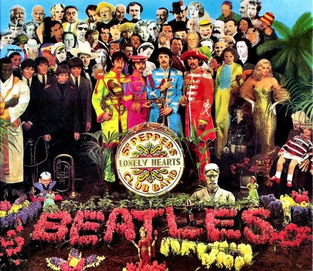

SGT.PEPPER LONELY HEARTS CLUB BAND

Lanzado el 1 de junio de 1967, Sgt. Pepper's Lonely Hearts Club Band, el octavo álbum de la banda se convirtió en la banda sonora del "verano del amor", pero su atractivo es atemporal.
En Gran Bretaña, el álbum llegó al número # 1 y, entre junio de 1967 y febrero de 1968, pasó un total de 27 semanas en la cima durante un período inicial de 148 semanas. Todo esto, a pesar de la prohibición de la BBC de "Un día en la vida".
Los temas del album son: